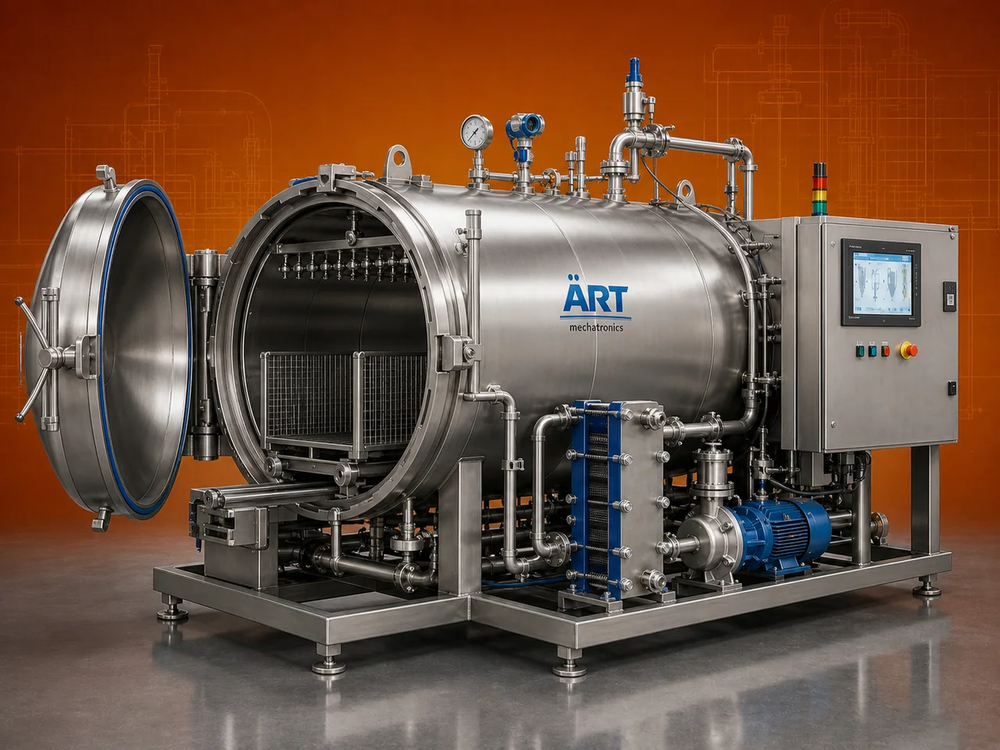

Retort / Autoclave Machine (Industrial Sterilization System for Food & Pharmaceutical Applications)
A Retort Machine, also known as an Autoclave Sterilization Machine or Retort Sterilizer, is a critical processing system used for thermal sterilization of packaged food products, pharmaceuticals, and containers using high temperature and pressure.

About the Retort / Autoclave Machine
Retort and autoclave systems are widely used in industries such as ready-to-eat (RTE) food processing, canned food manufacturing, dairy, beverages, pharmaceuticals, and nutraceuticals, where microbial safety, extended shelf life, and product stability are essential.
By applying controlled heat and pressure, these systems effectively eliminate bacteria, spores, and pathogens, ensuring long shelf life without compromising product quality.
ART Mechatronics offers advanced retort and autoclave machines, engineered for precise sterilization, uniform heat distribution, and compliance with global food and pharma standards.
One machine, many names
Buyers search for this equipment under many terms — we manufacture all of them:
Working Principle of Retort / Autoclave Machine
Types of Retort / Autoclave Machines
Industries Using Retort / Autoclave
🍱 Food Processing Industry
- Ready-to-eat meals
- Canned food
🥛 Dairy & Beverage Industry
- Milk-based products
- Juices
💊 Pharmaceutical Industry
- Sterilization of medicines
- Equipment sterilization
🌿 Nutraceutical Industry
- Health products
📦 Packaging Industry
- Sterilization of containers
Features & Advantages
✔ Ensures complete sterilization ✔ Extends product shelf life ✔ Maintains product quality and taste ✔ Suitable for multiple packaging formats ✔ Precise temperature and pressure control ✔ Compliance with food and pharma standards ✔ Safe and reliable operation
Technical Highlights
- Capacity: Batch / Continuous (customizable)
- Sterilization Type: Steam / Water spray / Immersion
- Temperature Range: High-temperature operation
- Pressure Control: Automatic system
- Construction: Stainless Steel (GMP compliant)
- Control System: PLC-based automation
Turnkey Sterilization Solutions
ART Mechatronics offers:
- Complete retort and autoclave system design
- Integration with processing and packaging lines
- Automation and control systems
- Installation & commissioning
- After-sales service & AMC
Why Choose Art Mechatronics
- Expertise in sterilization and thermal processing systems
- Customized solutions for food and pharma industries
- High-performance and hygienic machines
- Energy-efficient and reliable designs
- Proven performance across applications
Applications
- Ready-to-Eat Food Plants
- Canned Food Processing Units
- Dairy & Beverage Plants
- Pharmaceutical Manufacturing Units
- Packaging Facilities
Related Heating & Drying machines
Get pricing & specs for the Retort / Autoclave Machine
Share the product, target capacity, current process and plant location. These details help our engineers discuss the right machine or line configuration.
One partner, from design to start-up
ART Mechatronics designs, manufactures, installs and commissions your Retort / Autoclave Machine solution with regional presence in India, UAE and Thailand.